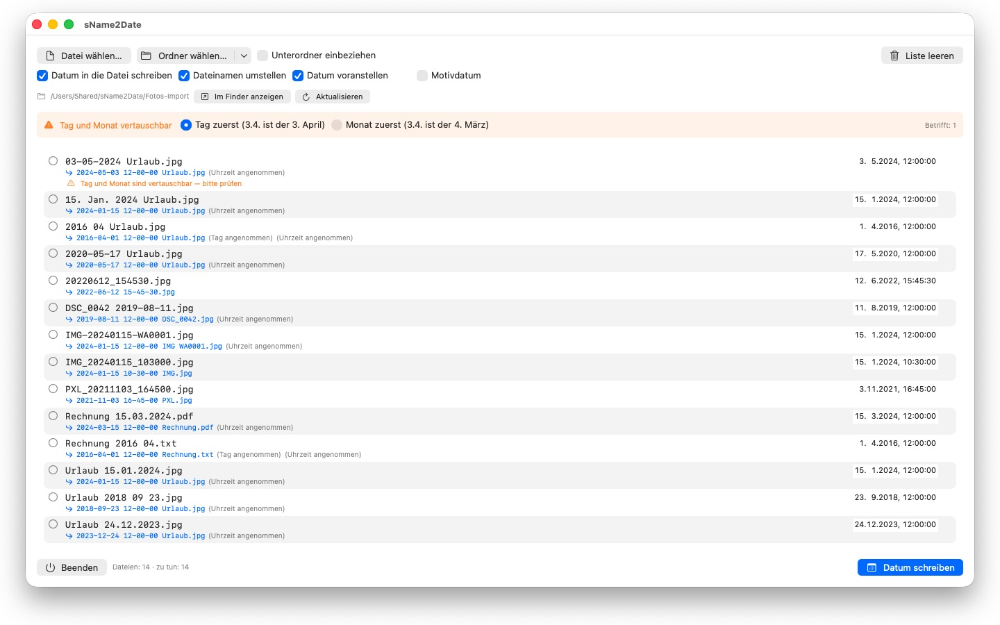
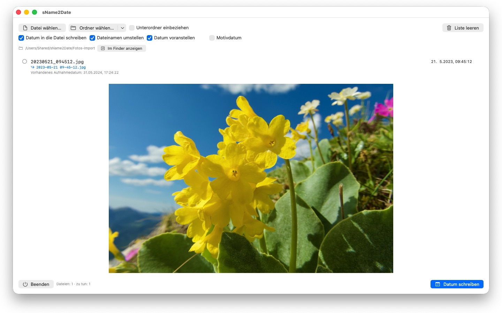

Fotos ohne Aufnahmedatum sortieren sich nirgends ein. sName2Date holt das Datum aus dem Dateinamen und schreibt es dorthin, wo jede Fotoverwaltung es sucht.


Viele Fotos und Filme tragen ihr Datum im Dateinamen — aber nicht dort, wo Programme es suchen. Wer Bilder aus einem Chat, von einem Scanner oder aus einem alten Archiv übernimmt, bekommt Dateien wie IMG_20240115_103000.jpg oder Urlaub 15.01.2024.jpg, die in jeder Fotoverwaltung mit dem Datum von heute erscheinen.
sName2Date liest das Datum aus dem Dateinamen und schreibt es als Aufnahmedatum in die Datei. Ist noch keins vorhanden, wird es angelegt.
ERKANNTE SCHREIBWEISEN
Datum und Uhrzeit in den gängigen Formen, unter anderem:
- 2024-01-15 10-30-00
- IMG_20240115_103000
- IMG-20240115-WA0001
- 2024-01-15 · 2024 01 15 · 2024_01_15
- 15.01.2024 · 15-01-2024 · 15.01.24
- 15. Jan. 2024 · 15 März 2024 · January 15 2024
- 2016 04 · 04-2016 — nur Jahr und Monat
Ausgeschriebene Monatsnamen werden in deiner Systemsprache und auf Englisch gelesen, in der langen wie der abgekürzten Form.
Trägt der Name nur ein Datum, wird eine Uhrzeit angenommen; welche, bestimmst du. Fehlt auch der Tag, gilt der Erste des Monats — die Zeile sagt es dazu. Stehen mehrere Datumsangaben im Namen, gewinnt die erste. Und wo Tag und Monat vertauschbar wären, entscheidet deine Einstellung — betroffene Dateien werden eigens gekennzeichnet, statt still geraten.
Steht im Namen gar kein Datum, trägst du es rechts in der Zeile selbst ein. Das reicht zurück bis 1826, dem Jahr der ältesten erhaltenen Fotografie — eingescannte Aufnahmen des 19. Jahrhunderts lassen sich also genauso datieren wie die von gestern.
WAS VERÄNDERT WIRD
Geschrieben werden EXIF DateTimeOriginal und DateTimeDigitized sowie TIFF DateTime, bei Filmen und Tonaufnahmen das Erstellungsdatum im Container. Auf Wunsch auch Erstellungs- und Änderungsdatum der Datei selbst.
Die Bilddaten bleiben unangetastet: ein JPEG wird nicht neu komprimiert, ein Film nicht neu kodiert. Bei Filmen und Tonaufnahmen ändert die App in aller Regel nur wenige Bytes im Container, statt ihn neu zu schreiben — auch ein großer Film ist damit in einem Augenblick fertig.
Ein Aufnahmedatum nehmen JPEG, PNG, TIFF, HEIC und GIF auf, dazu die Filmformate MP4, MOV und M4V sowie die Tonformate M4A und M4B.
AUCH DATEIEN, DIE KEIN AUFNAHMEDATUM TRAGEN KÖNNEN
Eine PDF, eine Textdatei, eine Tabelle hat gar kein Feld für ein Aufnahmedatum — und kommt trotzdem in die Liste. sName2Date setzt dort Erstellungs- und Änderungsdatum der Datei, die einzige Stelle, an der die Angabe überhaupt ankommen kann; die Zeile zeigt es mit einem orangen Haken statt eines grünen. Es zählt also keine Endung: PDF, Text, Tabellen, Archive, alles.
Soll die Datei gar nicht angefasst werden, nimmst du oben im Fenster den Haken „Datum in die Datei schreiben" heraus. Dann bringt sName2Date allein den Namen in die ISO-Schreibweise: aus Rechnung 15.03.2024.pdf wird 2024-03-15 12-00-00 Rechnung.pdf, und im Finder sortiert der Ordner danach nach Datum. Auf Wunsch bleibt das Datum dabei dort stehen, wo es im Namen stand, statt nach vorn zu wandern.
ALLES LÄSST SICH ZURÜCKNEHMEN
Ein Durchgang ist mit Cmd+Z vollständig rückgängig zu machen — Aufnahmedatum, Datei-Zeitstempel und der geänderte Dateiname. Cmd+Shift+Z stellt ihn wieder her.
GANZE ORDNER
sName2Date nimmt ganze Verzeichnisbäume auf einmal und kann Dateien überspringen, die schon ein Aufnahmedatum haben. Einmal freigegebene Ordner merkt sie sich und fragt nie wieder danach.
sName2Date Lite · Kostenlos — Die Ausgabe für eine Datei je Durchgang: das Datum aus dem Dateinamen als Aufnahmedatum in ein Foto, einen Film oder eine Tonaufnahme schreiben, von Hand setzen, den Namen in die ISO-Schreibweise bringen und alles mit ⌘Z zurücknehmen — dieselben Fähigkeiten wie sName2Date, nur ohne ganze Ordner.
- Erfordert macOS 12 oder neuer
- 24 Sprachen
- Support: SwiftAppsBavaria@gmx.net
Weitere Apps
sCollect
Musik, Filme, Hörbücher, E-Books und andere Sammlungen in einer Mediathek ordnen.
sVectorLift
Alte Vektor-Clipart öffnen, ansehen und als SVG sichern — CorelDRAW, Windows Metafile und CGM.
SwiftRename
Von der Speicherkarte ins Archiv: Fotos und Videos nach Aufnahmezeit benennen, nach Jahr, Monat oder Tag ablegen, Duplikate erkennen — auch bei RAW.
sCollectPlay
Der Player zur Mediathek: Musik, Filme, Hörbücher und Podcasts einfach aus einem Ordner, aus einer iTunes-XML oder aus einer sCollect-Mediathek abspielen — an den Tags der Dateien ändert sich dabei nichts. Mit Wiedergabelisten, Ton- und Untertitelspuren, bei Filmen mit Zeitlupe und Einzelbildschritt. Was macOS nicht selbst abspielt, etwa MKV, AVI oder DSD, geht an einen externen Player.
sCollectPlay Lite
Die schlanke Ausgabe von sCollectPlay: einfach einen Ordner, eine iTunes-XML oder eine sCollect-Mediathek öffnen und daraus Musik, Filme, Hörbücher und Podcasts abspielen — mit Wiedergabelisten, Ton- und Untertitelspuren, Zeitlupe und Einzelbildschritt. Eine Quelle je Sitzung; Spaltenbrowser, eigene Wiedergabelisten und zuletzt benutzte Quellen bleiben der Vollversion vorbehalten.
sBikeBridge
Radtouren auswerten, ohne sie in ein Portal hochzuladen: FIT-Dateien jedes Radcomputers einlesen, der in diesem Format aufzeichnet, dazu GPX und TCX. Die Touren liegen in einer eigenen Bibliothek auf dem Mac — mit Karte, Leistung und Herzfrequenz, Fotos und Notizen; Dubletten erkennt der Import. Kennzahlen je Jahr oder Monat und Filter nach Strecke, Höhenmetern und Dauer machen Touren vergleichbar. Die Karte gibt es auf Wunsch auch offline.